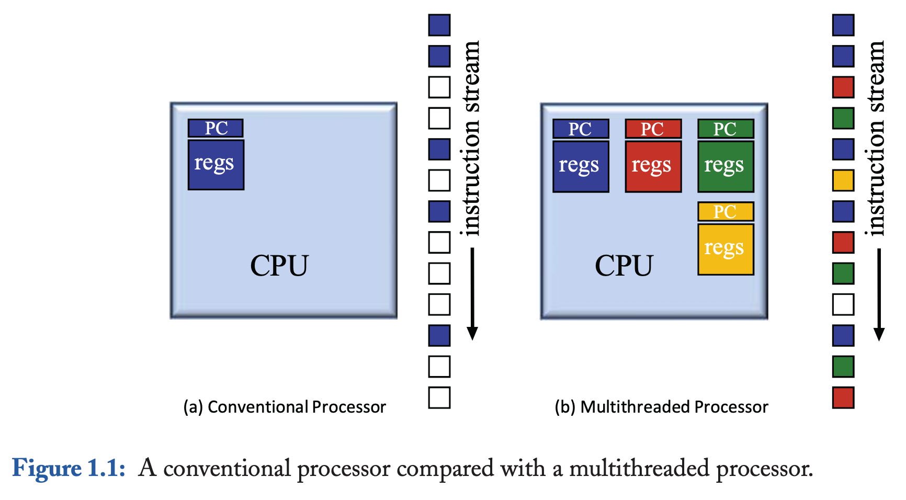
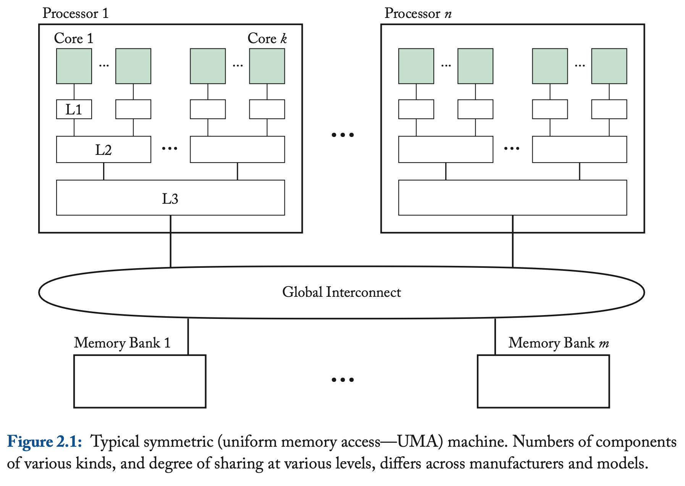
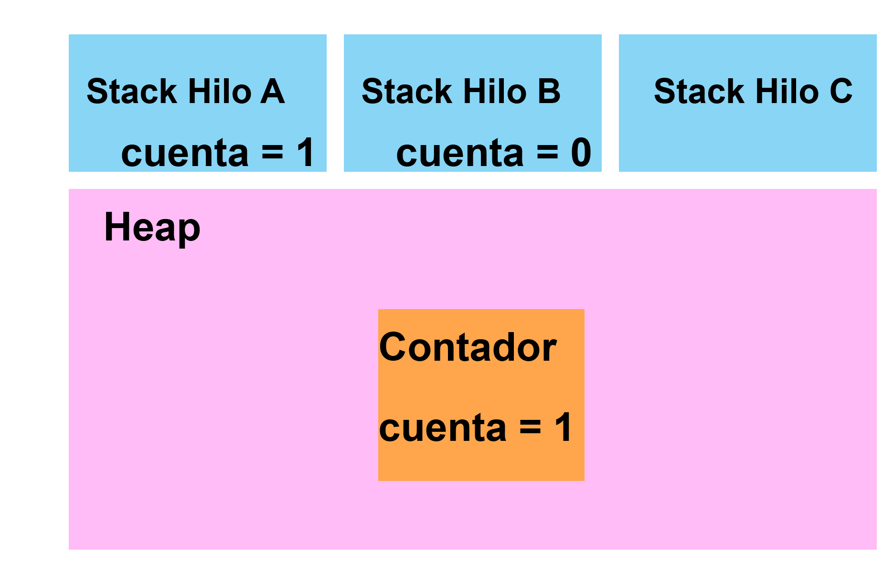

Contexto
“La necesidad de sincronización surge siempre que existan operaciones que se ejecutan de forma concurrente sin importar si realmente se ejecutan en paralelo” (Michael L. Scott 30 January 2024).
Esta observación data de los años 60’s por Edsger Dijkstra, a pesar de que las arquitecturas multiprocesador surgen a inicios de los 2000’s, las arquitecturas multihilo surgen antes.
En una arquitectura multihilo un solo procesador tiene la capacidad de seguir múltiples programas de ejecución distintos sin la necesidad de la intervención del software, ya que esto requeriría múltiples ciclos del procesador. En cambio, permite cambiar de un programa de ejecución o hilo a otro a partir del almacenamiento de los estados de los hilos en el hardware, esto potencia el uso más eficiente de recursos del procesador, como se observa en la Figura 1.
Las primeras máquinas con arquitecturas de multihilos surgieron en los años 50’s, la DYSEAC y la SEAC (Mario Nemirovsky 17 January 2013).

Una arquitectura multiprocesador está conformada por múltiples procesadores, permite ejecutar dos hilos o más en el mismo ciclo, es decir, de forma paralela debido a que los recursos de ejecución de cada hilo están distribuidos en los procesadores, y los procesadores a su vez tienen múltiples cores. En la Figura 2 se muestra un ejemplo de una arquitectura moderna, en donde cada procesador tiene múltiples cores, los cuales comparten determinadas instancias de memoria (Caché \(L1\), \(L2\), \(L3\), etc) y se comunican por un bus de memoria unificada. En la actualidad cada \(core\) tiene la capacidad de almacenar más de un hilo (Intel 2024). Cada arquitectura es distinta dependiendo el fabricante.

Los hilos/procesos se utilizan de forma diferente según distintos autores, por ejemplo, según Linus Torvalds un hilo/proceso es simplemente un contexto de ejecución. Sin embargo, en el curso consideraremos las definiciones a continuación:
Un proceso es un programa en ejecución. Un hilo es un proceso que puede ejecutarse de forma paralela con otros hilos concurrentes y compartir recursos (por ejemplo: variables).
Un proceso también se puede considerar como un conjunto de hilos que comparten el espacio del proceso (memoria, disco, cpu, etc).
Multihilos en Java
Arquitectura de JVM.

En la Figura 4 se muestra la anatomía de la JVM, sin embargo, en este curso nuestras áreas de interés son: Thread Synchronization y Memory Management.
Un hilo en Java se implementa por un hilo nativo del sistema operativo, cada hilo tiene una región de memoria reservada la cual se denota como la stack de cada hilo. Cada stack contiene variables locales y configuraciones de métodos que son ejecutados por el hilo (El tamaño de las stacks es una variable en la JVM).
En relación con la asignación de memoria en Java, cada objeto nuevo creado con el operador new reside en la memoria llamada Java heap, la cual está especificada por la JVM (y no por los programadores). Sin embargo, esta heap debe ser rápida y thread-safe, es por eso que cada hilo tiene su propia región en esta heap.

Hilos en Java.
Un hilo en Java es una instancia de la clase java.lang.Thread (https://docs.oracle.com/javase/8/docs/api/java/lang/Thread.html), se crean como cualquier otro objeto en Java.
Podemos crear un hilo de dos formas distintas:
Extendiendo la clase Thread y sobrescribiendo el método run()
Implementando la interfaz Runnable para pasarla como argumento de un objeto de la clase Thread.
Un hilo de la clase Thread tiene los siguientes atributos:
\(\diamond\) ID
\(\diamond\) Nombre
\(\diamond\) Prioridad
\(\diamond\) Status: Consta de 5 estados.
Los 5 estados son los siguientes:
New: El hilo se ha creado pero no ha empezado
Runnable: El hilo está siendo ejecutado por la JVM
Blocked: El hilo está bloqueado y está esperando por un monitor (\(sleep()\), \(await()\))
Timed\(\_\)waiting: Un hilo está esperando a otro por un lapso de tiempo específico
Terminated: Un hilo ha terminado su ejecución
Ejemplos
En el siguiente link: https://github.com/surindt/FC_CConcurrente/tree/main/Programas_P1
Programa 1 (ExampleThreads): Creacion de un hilo
Programa 2 (ExampleMultipleExtends): Ejemplo de un contador extendiendo la clase Thread
Programa 3 (ExampleMultipleRunnable): Ejemplo de un contador implementando la interfaz Runnable
Programa 4 (MainThread): Ejemplo de un contador que no termina
Programa 5 (AlwaysDesignToStop): Ejemplo de un contador que termina solo si el hilo principal lo detiene
Programa 6 (UseJoin): Uso de Join()
Programa 7 (ExampleMultipleExtends2): Ejemplo de un contador extendiendo la clase Thread, compartiendo un contador
Programa 8 (ExampleMultipleRunnable2): Ejemplo de un contador implementando Runnable, compartiendo un contador
Programa 9 (FibonacciThreads): Programa no muy paralelizable
Programa 10 (DeterminanteConcurrente): Programa para obtener el determinante de una matriz de 3x3
Ejercicios
Instrucciones:
Entrega en un PDF las respuestas de los ejercicios que no requieran implementarse, en los ejercicios que requieran implementación añade una breve descripción de los programas que entregas (sus nombres y qué hacen).
Solo un integrante del equipo debe subir la práctica. Los demás integrantes deben marcar la tarea como entregada y escribir, en un comentario privado dentro de la práctica, el nombre completo de la persona que realizó la entrega. Todos los programas y el PDF deben ir dentro de un archivo ZIP. El archivo ZIP debe seguir el siguiente formato de nombre:
P#k_ApellidoPaternoNombre, usando el apellido y nombre de la persona que entrega la práctica.Cada ejercicio debe tener un programa que indique “Implementar” si aplica.
Recuerda que debes utilizar Java 21 LTS.
Si no compila utilizando Java 21 LTS o si no se entrega la breve descripción de los programas se penalizará.
Tiempo de elaboración:\(\approx\) 1.5hr
Total de puntos: 100
Lee lo siguiente https://www.evanjones.ca/software/threading-linus-msg.html y comparte en máximo 4 líneas de computadora a que se refiere Linus Torvalds con un contexto de ejecución y cómo se relaciona con la definición en la sección 1 de esta práctica.
¿Cuántos hilos tiene disponibles tu computadora?
Ejecuta Runtime.getRuntime().availableProcessors(), si son más de uno en el equipo escriban el de cada uno.
Revisa el programa Determinante concurrente y responde ¿Cuánto tiempo tarda en ejecutarse?
El programa Determinante concurrente está implementado extendiendo la clase Thread. Implementa el programa utilizando la interfaz Runnable.
Implementa el programa Determinante concurrente de forma secuencial.
Implementa del programa Determinante concurrente para dos hilos (en vez de seis).
Compara las 3 implementaciones: el programa Determinante concurrente para dos hilos, para seis hilos y el programa secuencial. Responde: ¿A qué se debe el orden en el que se ordenan los tiempos de ejecución de cada programa?
Si utilizas la Ley de Amdahl entre el programa Determinante concurrente para dos hilos y el programa secuencial. ¿El resultado es mayor o menor a 1? ¿Por qué?
Describe con tus propias palabras en máximo dos líneas para qué sirve el método join(). Si no utilizas el método join() en Determinante Concurrente, ¿sigue funcionando?